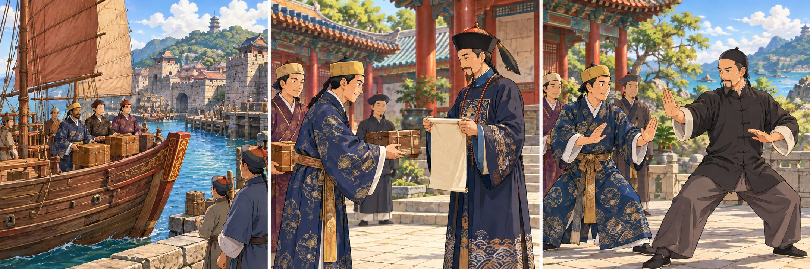
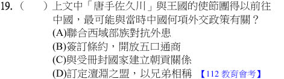
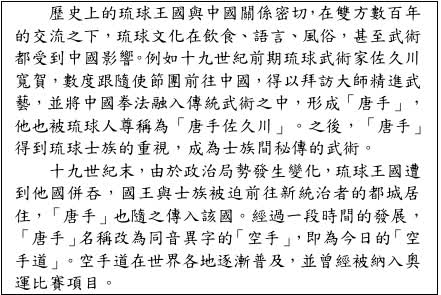
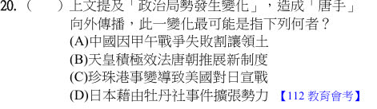
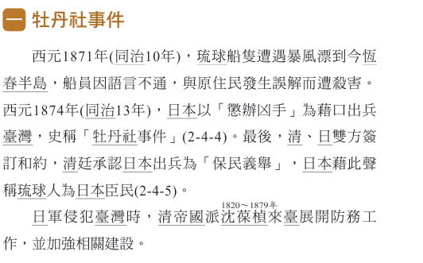

完整原題
作答所需文章／材料
歷史上的琉球王國與中國關係密切，在雙方數百年的交流之下，琉球文化在飲食、語言、風俗，甚至武術都受到中國影響。例如十九世紀前期琉球武術家佐久川寬賀，數度跟隨使節團前往中國，得以拜訪大師精進武藝，並將中國拳法融入傳統武術之中，形成「唐手」，他也被琉球人尊稱為「唐手佐久川」。之後，「唐手」得到琉球士族的重視，成為士族間秘傳的武術。 十九世紀末，由於政治局勢發生變化，琉球王國遭到他國併吞，國王與王族被迫前往新統治者的都城居住，「唐手」也隨之傳入該國。經過一段時間的發展，「唐手」名稱改為同音異字的「空手」，即為今日的「空手道」。空手道在世界各地逐漸普及，並曾經被納入奧運比賽項目。歷史第19題｜琉球使節與朝貢關係
歷史第20題｜日本藉牡丹社事件向外擴張
先想一想，再查看答案、解說與原圖
歷史第19題｜琉球使節與朝貢關係
分享原卷｜第 19 題 · 首次出題日期 2026-09-29 · 原AI對話 ↗
逐項解析
| 選項與原句 | 判讀 | 句意與判斷理由 |
|---|---|---|
| (A) 聯合西域部族對抗外患 | 不選 | 本題是琉球與中國的海上交流，不是西域對抗外患。 |
| (B) 簽訂條約，開放五口通商 | 不選 | 五口通商是近代條約體系，不是文中數百年交流的朝貢脈絡。 |
| (C) 與受冊封國家建立朝貢關係 | 應選 | 琉球派遣使節、接受冊封，符合朝貢關係。 |
| (D) 訂定澶淵之盟，以兄弟相稱 | 不選 | 澶淵之盟是宋、遼之間的約定，與琉球使節無關。 |
詳細說明與解題步驟
一、先看國家與交流方式
琉球王國派使節前往中國，屬當時東亞冊封、朝貢體系的交流，選C。使節往來也提供武術等文化傳播的機會。
二、排除其他時空
五口通商連到鴉片戰爭後的條約；澶淵之盟連到宋遼；西域部族則不符合琉球這個海島王國。
三、不要把朝貢直接等同現代行政隸屬
朝貢、冊封是當時外交與政治關係，不能僅憑派遣使節就把琉球視為中國境內一般行政區。此題只需辨認制度，不必把歷史關係套成現代國界。

① 琉球使節走的是海路
原文說琉球王國的使節前往中國。先抓國家與往來方式：是海島王國的使節交流，不是聯合西域部族對抗外患。
② 冊封、朝貢的制度關係
琉球接受冊封，並派使節朝貢，符合C。這是當時的外交與政治關係，不能只因派使節就當成中國境內一般行政區。
③ 使節往來也帶動文化
佐久川跟隨使團訪中國，得以學習拳法，融入琉球武術形成唐手。這是制度交流帶來的文化傳播機會。
④ 使節往來，辨認朝貢與冊封
答案 C：與受冊封國建立朝貢關係
- 關鍵詞：使節、冊封、朝貢。
- 五口通商連到鴉片戰爭後的近代條約。
- 澶淵之盟屬宋遼關係，不是琉球。
核對註記：已核對題幹、全部選項與必要材料；教材對應課次未確認，歸綜合。
原圖（僅本題）


歷史第20題｜日本藉牡丹社事件向外擴張
分享原卷｜第 20 題 · 首次出題日期 2026-09-29 · 原AI對話 ↗
逐項解析
| 選項與原句 | 判讀 | 句意與判斷理由 |
|---|---|---|
| (A) 中國因甲午戰爭失敗割讓領土 | 不選 | 甲午戰爭在1894至1895年，晚於日本併吞琉球，不是此段傳播的原因。 |
| (B) 天皇積極效法唐朝推展新制度 | 不選 | 效法唐朝制度屬更早的日本歷史，與十九世紀末不符。 |
| (C) 珍珠港事變導致美國對日宣戰 | 不選 | 珍珠港事變發生於1941年，與題幹時段不符。 |
| (D) 日本藉由牡丹社事件擴張勢力 | 應選 | 日本以1874年牡丹社事件等行動加強擴張，後於1879年併吞琉球，符合題文。 |
詳細說明與解題步驟
一、把地名與年代對起來
題目說琉球王國遭併吞、王族遷往新統治者都城，對應日本向琉球擴張、於1879年設沖繩縣的歷史背景。
二、串起牡丹社事件與擴張
題目另附資料說，1871年琉球船民漂流臺灣，1874年日本以保護琉球人為由出兵臺灣，並宣稱琉球人是日本國民。這反映日本擴張勢力及加強對琉球的控制，D最符合。
三、避免把甲午割臺提前
甲午戰爭與割讓臺灣較晚，不能因為同樣涉及日本與清朝就一律選A。C更晚，B則早得多。解題要同時核對事件與時間。
① 先抓琉球與十九世紀末
文章先說琉球與中國交流形成唐手，後來琉球被併吞，王族遷居新統治者都城，唐手也隨之向外傳播。
② 1874：日本藉事擴張
附資料說，日本以保護琉球人為由出兵臺灣，並宣稱琉球人是日本國民。這對應D的牡丹社事件與向外擴張。
③ 1879：併吞琉球
日本後來併吞琉球、設沖繩縣，符合王國消失與王族遷居的線索。甲午戰爭割臺在更後面，不能倒放進這段背景。
④ 唐手傳播的背景，要對上十九世紀末
答案 D：藉牡丹社事件擴張
- 1874牡丹社事件；1879日本併吞琉球。
- 甲午戰爭在1894～1895年，比此事更晚。
- 珍珠港事件更到1941年，時段不符。
核對註記：已核對題幹、全部選項與必要材料；教材對應課次未確認，歸綜合。
原圖（僅本題）


